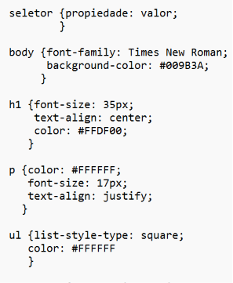

Resumo do Capítulo 3: Designing Web Pages with CSS
O Capítulo 3 apresentou os fundamentos do CSS (Cascading Style Sheets), linguagem utilizada para definir a aparência visual de páginas HTML. Enquanto o HTML cria a estrutura e o conteúdo da página, o CSS é responsável pelo estilo, cores, posicionamento, alinhamento e organização visual dos elementos.
O CSS funciona através de regras compostas por:
- selectors (seletores);
- properties (propriedades);
- values (valores).
Exemplo da estrutura de um comando CSS:

Os seletores definem quais elementos HTML serão estilizados. Existem diferentes tipos de seletores:
- seletores de elementos (p, h1, div);
- seletores de classe (.menu);
- seletores de ID (#header);
- pseudo-classes (:hover, :focus);
- pseudo-elements (::before, ::after).
As pseudo-classes selecionam elementos em determinados estados ou condições, como quando o mouse passa sobre um link (:hover) ou quando um campo recebe foco (:focus). Já os pseudo-elements permitem selecionar partes específicas de um elemento ou criar conteúdo visual antes ou depois dele.
O capítulo também apresentou o conceito de specificity (especificidade), mecanismo usado pelo navegador para decidir qual regra CSS será aplicada quando várias regras tentam estilizar o mesmo elemento. IDs possuem maior especificidade que classes, e classes possuem maior especificidade que seletores de elementos.
Outro conceito importante foi inheritance (herança). Algumas propriedades CSS, principalmente relacionadas a texto, são herdadas automaticamente pelos elementos filhos. Propriedades como color e font-family normalmente herdam, enquanto propriedades de layout como margin, padding e border geralmente não herdam.
Na parte de cores, o capítulo explicou propriedades como:
- color (cor do texto);
- background-color (cor do fundo)
Também foram apresentados diferentes formatos de cores:
- nomes de cores (red, blue);
- hexadecimal (#ff0000);
- RGB (rgb(255,0,0));
- RGBA (rgba(255,0,0,0.5)), que adiciona transparência.
A seção sobre textos mostrou propriedades usadas para estilização tipográfica:
| PROPIEDADE | FUNÇÃO |
|---|---|
| font-family | Define o tipo da fonte |
| font-size | Define o tamanho da fonte |
| font-weight | Define a espessura da fonte (negrito) |
| font-style | Define o estilo da fonte (itálico, oblique) |
| text-align | Define o alinhamento horizontal do texto |
| text-decoration | Adiciona decorações ao texto (underline, line-through) |
| text-transform | Transforma o texto (maiúsculo, minúsculo, capitalize) |
| line-height | Define o espaçamento entre linhas de um texto |
O capítulo apresentou estilização de tabelas utilizando propriedades CSS para melhorar organização e aparência visual de dados tabulares. Foi mostrado como controlar bordas, espaçamento, alinhamento e cores em tabelas HTML utilizando elementos como table, tr, th e td.
Entre as propriedades utilizadas em tabelas destacam-se border, border-collapse, padding, text-align e background-color, que ajudam na legibilidade e organização visual das informações.
O capítulo também abordou estilização de listas usando propriedades como:
- list-style-type = Define o bullet da lista;
- list-style-position = Define a posição do bullet;
- list-style-image = Define imagens como bullet;
- list-style = Uma shorthand property, ela dá a possibilidade de colocar todas as propriedades de listas mencionadas até agora em uma única linha.
Foi mostrado que listas podem ser usadas tanto para conteúdo comum quanto para menus de navegação.
Por fim, o capítulo introduziu os diferentes layout systems do CSS. Antigamente, tabelas eram usadas incorretamente para posicionar elementos na página. Com a evolução do CSS, surgiram sistemas específicos para layout:
- normal flow;
- float;
- positioning;
- Flexbox;
- CSS Grid.
O Flexbox é utilizado principalmente para alinhamento e distribuição de elementos em uma única direção (linha ou coluna), enquanto o CSS Grid trabalha com linhas e colunas simultaneamente, permitindo layouts bidimensionais mais complexos.